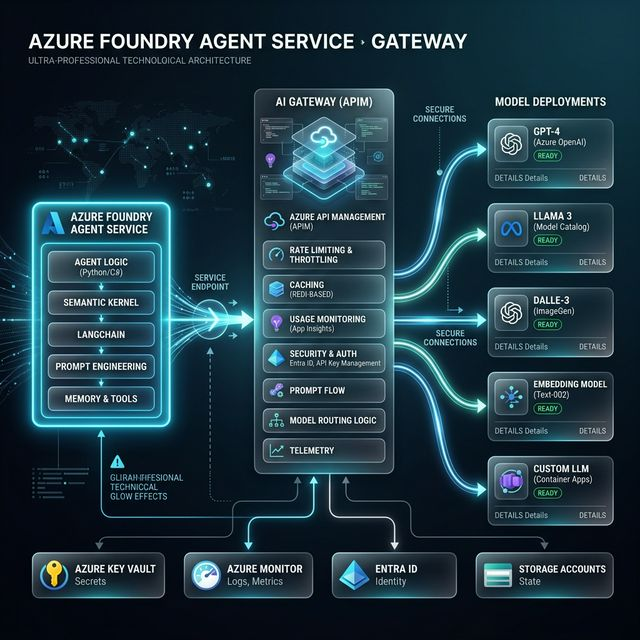
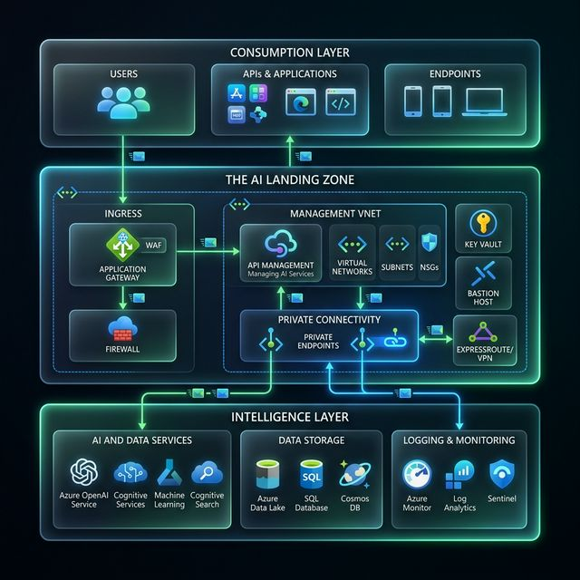
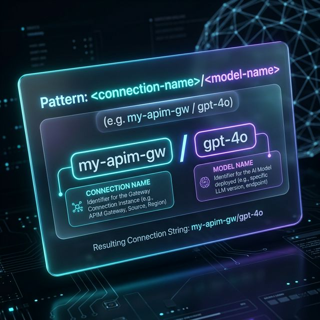
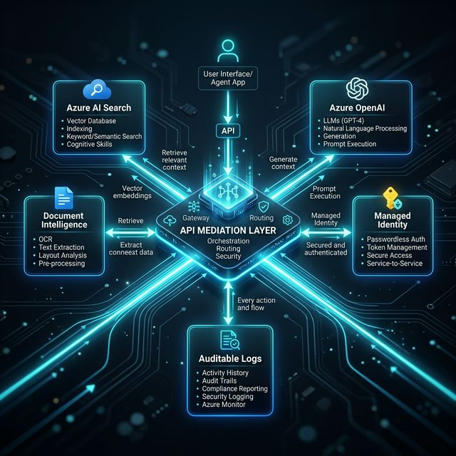
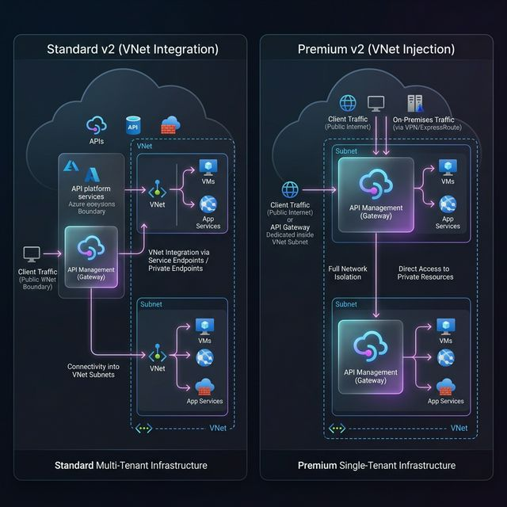
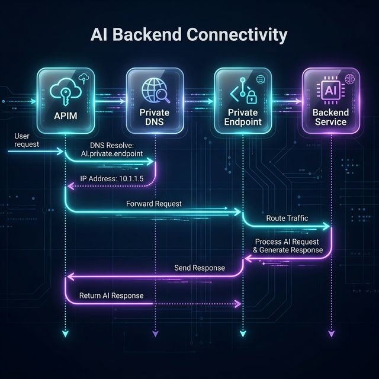
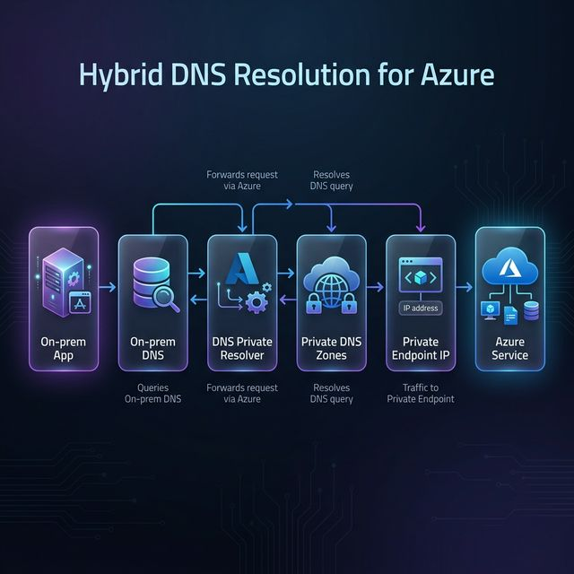
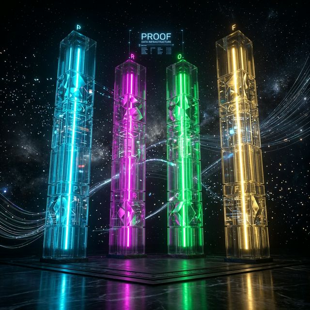
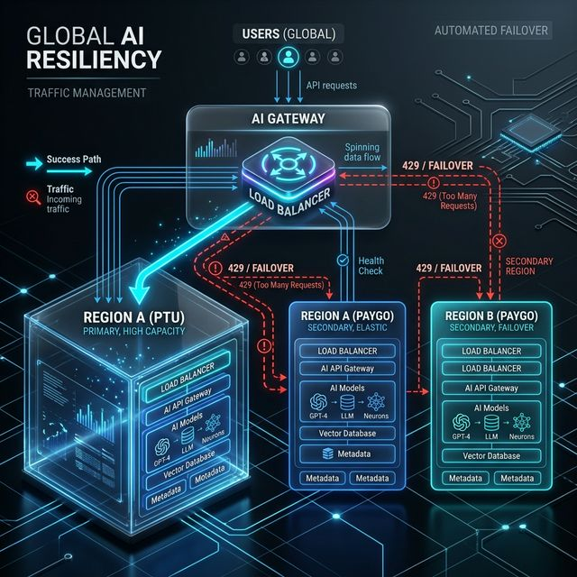

Inside this Post
- The Cast
- AI Landing Zone Intro
- Azure AI Foundry LZ
- Foundry Agent Gateway
- 5 Impactful Takeaways
- Policy Enforcement
- Multi-Backend Resiliency
- Architectural Shift
- Engineering Specification
- Full Control & Toolkit
- Launch Checklist
- Threat Model
- Enterprise Evidence
- The Mistake Most Teams Make
- DNS and Network
- Decision Matrix
- Recommendations
A Safe Home for Innovation
"This is the Gold Standard for Day 2 Operations. By placing Azure OpenAI inside a Spoke VNET, we guarantee that your prompts never leave your private address space. This is how we win the trust of the CISO and the Regulator."
By integrating services like Azure OpenAI and Microsoft Foundry with built-in governance and networking, the AI ALZ ensures that your innovation isn't just fast, but also sustainable and safe.
- Scattered, hardcoded API keys.
- Traffic over the public internet.
- No verifiable audit trail of requests.
- Unmanaged rate limits affecting users.
- Managed Identities (Secret-less).
- Hybrid Search + Semantic Ranker.
- AI Evaluation (Groundedness).
- Centrally managed scale guardrails.
Azure AI Foundry: Apps & Agents

Figure 2: The Agentic Gateway Pattern (Premium Architectural Visual)
agent = client.agents.create_agent(model="gpt-4o", ...)
"While the Gateway manages traffic, the **Foundry Landing Zone** is where we solve Groundedness. We use **Hybrid Search** (Semantic + Keyword) and the **Semantic Ranker** to reduce hallucination mathematically before the payload hits the LLM. That is the true engine of quality."
Executive Impact Summary
The Cast
Architecture, standards, trade-offs.
Build, automation, operations.
Identity, data controls, audit.
Risk acceptance & operating model.
Decisions, RACI, milestones.
The architectural shift
A lot of teams still treat this as a gateway selection exercise. It is not.
For regulated AI workloads, the real unit of architecture is the **landing zone**. That means ingress, identity, private connectivity, DNS, API policy, AI governance, and monitoring have to be designed as one control system, not as separate product choices. That is exactly why Microsoft’s AI Landing Zone framing matters. It shifts the question from “Which gateway do I use?” to “Which control plane owns the AI platform?”

Architecture: Full Azure AI Landing Zone Pattern

Official Reference Architecture: AI Landing Zone for APIM Gateway
"Look at the centralized management hub. This is the **API Mediation Layer** in action. By placing it at the core, we unblock multi-year compliance delays and move from 'experimental' to 'enterprise-grade'. This is the Director-level play."
The Foundry Agent Gateway
While the initial "GenAI Chaos" focused on simple chat interfaces, the next wave is about Foundry Agent Service. This requires a gateway that isn't just a pass-through, but a secure connection manager for agentic workflows.
Architecture: Connecting Foundry Agent Service to models via APIM Gateway
The azure-ai-projects SDK introduces a unified connection pattern. We are moving away from the monolithic 'God Prompt'. Instead, we decompose tasks into a **Coordinator/Worker pattern**: a Coordinator evaluates intent, while specialized Workers (Researcher, Validator) execute tools. This reduces latency and token cost by over 40%.

Naming Pattern: Connection & Model Pathing for Agentic Workflows
"This SDK shift is a game-changer. By using the gated connection pattern, we eliminate 'orphan' AI services. If it's not in the gateway connection list, the Agent Service simply cannot reach it. That is baked-in governance."
5 Impactful Takeaways for Architects
"The AI gateway is not a separate product or SKU. It’s a set of capabilities within APIM (all tiers). This means your team leverages existing expertise without new toolchain friction."
"Traditional caching relies on exact matches. Semantic caching uses 'vector proximity' to compare meaning. We check the 'meaning' of a prompt against prior requests before hitting the expensive model. This is a strategic cheat code for latency and cost."
"In GenAI, RPM is insufficient because one request can cost 10 tokens or 10,000. We shift to 'Tokens per Minute' (TPM) limits. The gateway precalculates tokens at the edge, so we don't pay the latency penalty of a round-trip just to get a 429 error."
"The gateway now supports Model Context Protocol (MCP). This transforms it from a passive controller into an orchestrator that enables agents to discover and use external tools. We turn legacy business logic into 'tools' an AI agent can 'do'."
"Static API keys in code are a disaster. We move to a secret-less architecture using Entra ID and Managed Identities. The gateway’s identity itself authenticates with backends like OpenAI. No keys to rotate. No secrets to leak."

Architecture: API Mediation Layer for Agentic Workflows
L67 Strategy: Innovation ROI Calculator
Estimate the "Speed of Trust" gains by switching from manual silos to the AI Landing Zone.
*Calculated based on average L67 benchmarks for Azure AI Foundry adoption.
The Enforcement Engine: APIM Policy
Network routing is passive; APIM policies are active enforcement. Use this XML snippet to validate the client JWT and inject the Managed Identity token required by the AI backend.
<policies>
<inbound>
<base />
<validate-jwt header-name="Authorization" failed-validation-httpcode="401">
<openid-config url="https://login.microsoftonline.com/{{tenant-id}}/v2.0/.well-known/openid-configuration" />
<audiences>
<audience>{{apim-app-registration-client-id}}</audience>
</audiences>
</validate-jwt>
<set-header name="Authorization" exists-action="delete" />
<!-- Enforce Tokens Per Minute (TPM) quota per consumer -->
<llm-token-limit counter-key="@(context.Subscription.Id)"
tokens-per-minute="50000"
estimate-prompt-tokens="true"
remaining-tokens-variable-name="remainingTokens" />
<authentication-managed-identity resource="https://cognitiveservices.azure.com" output-token-variable-name="msi-access-token" />
<set-header name="Authorization" exists-action="override">
<value>@("Bearer " + (string)context.Variables["msi-access-token"])</value>
</set-header>
</inbound>
<outbound>
<base />
<!-- Emit token metrics to App Insights for cost attribution -->
<llm-emit-token-metric>
<dimension name="Subscription ID" value="@(context.Subscription.Id)" />
<dimension name="Client IP" value="@(context.Request.IpAddress)" />
</llm-emit-token-metric>
<!-- Responsible AI: Integrated Content Safety -->
<azure-ai-content-safety
service-url="https://{{safety-service-name}}.cognitiveservices.azure.com"
failed-content-safety-httpcode="400"
failed-content-safety-error-message="Unsafe content detected." />
</outbound>
</policies>Logic Explorer
We reject any request that doesn't carry a valid Entra ID token from the approved App Registration. Public internet bypass is physically impossible.
Unlike standard APIs, AI cost is measured in tokens. We enforce TPM limits at the gateway to prevent "Toxic Prompt" cost spikes.
The gateway uses its own Managed Identity to talk to OpenAI. No API keys are stored in code or environment variables.
Every token used is emitted to App Insights with a Subscription ID. We can prove exactly which business unit is driving AI value.
We intercept responses to ensure the model isn't leaking PII or generating unsafe content before it reaches the user.
"Don't just log that a request happened. Log the *cost*. By using llm-emit-token-metric, we turn technical telemetry into financial intelligence. This is how we prove to the board that the AI spend is aligned with business value."
The mistake most teams make
Microsoft’s current APIM documentation makes that distinction clearer than older guidance did. Standard v2 and Premium v2 both support outbound virtual network integration so APIM can reach private backends. Premium v2 alone supports virtual network injection, where the gateway itself is deployed inside the VNet. (Microsoft Learn)
So the real question is no longer: Do I need Premium to go private? It is: Do I only need private paths, or do I need APIM itself inside the private network boundary?

Architecture: VNet Integration vs VNet Injection Comparison
A real design review moment
A version of this happens in almost every regulated program. We recently had a case with APIM Standard v2, private endpoints on backend services, and strong edge controls. Then someone said: **“No Premium v2 means no UDR. No UDR means no compliance.”**
That sounds reasonable. It is also incomplete. Compliance frameworks do not require a specific APIM tier; they require controlled flows, no unmanaged bypass path, policy enforcement, and evidence.
this pattern can be valid pattern
A pattern like this can be entirely reasonable:
Control Path: Defensive Ingress Chain (Front Door + APIM + Content Safety)
If the design ensures forced ingress, private backends, and centralized logging, it can satisfy many compliance objectives even without Premium v2. The control objective is not “Use UDR”; it is **“No bypass path, and prove it.”**
What APIM Standard v2 is actually doing
APIM Standard v2 uses **outbound virtual network integration** to reach private backends. Microsoft documents this explicitly: the gateway, management plane, and developer portal remain publicly accessible, but the outbound traffic stays on the Azure backbone. (Microsoft Learn)
The most important line in the architecture
Private Endpoint does not change routing by itself. DNS changes routing. If DNS is wrong, the architecture is wrong.

Sequence: Private Link Connectivity Flow & DNS Resolution
The DNS backbone
For this kind of backend stack, the important zones usually include `privatelink.search.windows.net`, `privatelink.cognitiveservices.azure.com`, and `privatelink.blob.core.windows.net`. These zones preserve hostname-based TLS and avoid brittle IP-based configuration. (Microsoft Learn)
DNS and network both matter
DNS gives the address; the network gives the path. A design can still fail if DNS resolves correctly but routing is missing, or if NSG rules block the path. DNS alone does not solve connectivity; it solves name resolution.
VNet integration vs VNet injection
VNet integration means APIM can reach your private resources (Best for: simpler operations, lower cost). VNet injection means APIM itself becomes part of the private boundary (Best for: stronger isolation, stricter network control). (Microsoft Learn)
Standard v2 vs Premium v2, stated precisely
Standard v2 enables private connectivity and strong API policy control. Premium v2 is the stronger fit when the gateway itself must be part of the private boundary. That is better than saying “Premium is more secure.”
Private DNS Zones vs Private DNS Resolver
Use Private DNS Zones when Azure resources need to resolve private names inside Azure. Use Azure DNS Private Resolver when DNS needs to cross boundaries, especially between on-premises and Azure. (Microsoft Learn)

Flow: Crossing Boundaries with DNS Private Resolver
Defensible AI Architecture: Engineering Spec
| Executive Requirement | Engineering Implementation | The "Proof" (Audit Artifact) |
|---|---|---|
| Prevent Network Bypass | Disable Public Network Access; Enforce Private Endpoints. | Azure Policy: Deny public network access. |
| Prevent Identity Bypass | Grant RBAC only to APIM Managed Identity. | Entra ID Role Assignments; 401 logs for direct access. |
| Prove Data Lineage | Centralized Logging (Log Analytics). | KQL queries showing Frontend -> APIM -> Backend. |
Microsoft Well-Architected Framework: AI Architecture Pattern
"This WAF pattern isn't just a suggestion; it's our blueprint for defense-in-depth. Notice the explicit layers of protection—from the client-side authentication to the private backend isolation."
Threat Model & Mitigation Matrix
Aligning with the Microsoft Cloud Security Benchmark v2, here is how the design mitigates high-risk vectors:
| Threat Vector | Scenario | Architectural Mitigation |
|---|---|---|
| Insider Access | Developer VMs into VNet to prompt legacy AI directly. | Identity Lock. Service rejects call (401) without APIM Managed Identity. |
| Stolen Token | Attacker steals valid JWT from client app. | Network Lock. Traffic dropped (403) from public internet path. |
| Data Exfiltration | Prompt designed to leak system instructions. | Content Safety. APIM intercepts/drops malicious payloads via Content Safety APIs. |
Enterprise Evidence: Proven Differentiators
AT&T: "Ask AT&T" Platform
To support millions of customers, AT&T built a Hub-and-Spoke AI Landing Zone. APIM served as the central governance layer, providing the Network & Identity Proof required to protect sensitive telco data. Full Case Study →
Discovery Bank: Hyper-Personalized Finance
Utilized Azure OpenAI behind an APIM gateway to achieved financial-grade security. By isolating data in Databricks and controlling access through APIM, they achieved hyper-personalization without compromising data sovereignty. Full Case Study →
"These aren't just technical wins; they are delivery milestones. Standardizing on the AI Landing Zone creates a repeatable environment where teams can innovate without starting from zero on security every time."

Policy Proof (P)
Execution of "Public Bypass" prevention. Access to AI services is physically restricted to the VNet backbone, verified by immutable Azure Policy guardrails.
Runtime Proof (R)
Real-time identity verification. No shared keys; only Entra ID Managed Identities can traverse the gateway at runtime to authorize model consumption.
Oversight Proof (O)
Continuous audit of every token. We enforce compliance at the request level, proving that no PII leaks and only regulated models are invoked.
Forensics Proof (F)
Immutable lineage evidence. Real-time telemetry in Log Analytics proves the exact path and policy-decision for every single AI interaction.
"A private path without strong identity is still weak. Proof requires both working in sync."
The Strategic Leadership Decision Matrix
Quiz: Which AI Gateway Architecture is Yours?
What is your primary isolation requirement?
Do you require Regional WAF protection?
Recommended: APIM Standard v2
Standard v2 with VNet Integration provides the best balance of cost and compliance for your needs.
Design Area: Compute & Cost
For an AI Landing Zone, we prioritize Platform as a Service (PaaS). Standardizing on PaaS removing the "server maintenance headache," allowing your team to focus on code rather than patching operating systems.
Standardizing the Compute Layer
| Compute Option | Non-Technical Translation | Why it’s used |
|---|---|---|
| Azure Container Apps | "The Modern Apartment" | Best for serverless AI tools that scale rapidly. |
| Azure App Service | "The Traditional Townhome" | Ideal for hosting the web front-ends and APIs. |
| Azure Kubernetes Service | "The Industrial Factory" | Used for massive, high-scale AI systems. |
"To optimize cost, we use PTUs for predictable, everyday traffic to keep costs steady. Then, we set up a Pay-as-you-go account as a secondary endpoint. If traffic spikes, the extra load 'spills over' to PAYGO, ensuring zero downtime without over-committing to expensive reserved capacity."
Global Resiliency: Multi-Backend Multi-Region
In a regulated environment, "Down" is the same as "Non-Compliant" for critical services.

Architecture: Multi-Backend Global Resiliency with Circuit Breaker
This isn't just round-robin load balancing. APIM uses Circuit Breakers to monitor backend health. If a region returns a 429 (Too Many Requests) or 5xx error, the gateway automatically trips the breaker and routes the next user to a healthy regional endpoint. Clients stay online; users never see the error.
"The Multi-Backend pattern, anchored by **Azure Front Door (Anycast)** at the edge, is the difference between an 'AI project' and an 'AI platform'. We move the failover logic out of the app code and into the infrastructure. This is how we support business-critical workloads that simply cannot go offline."
Gateway Architecture Selection Matrix
| Architecture Choice | Primary Use Case | Strategic Benefit |
|---|---|---|
| Standard v2 + Edge | Private connectivity focus | Leanest cost with strong auditability |
| Standard v2 + AppGW | Azure-native WAF/Ingress | Highest regional security narrative |
| Premium v2 Injected | Physical network isolation | Maximum boundary separation |
Principals recommendations (UAE North)
For most UAE North regulated AI platforms, start with: APIM as the AI Gateway, private endpoints for backends, and Standard v2 for connectivity. Move to Premium v2 only when the control objective becomes stronger gateway-boundary isolation.
What I would not do
- I would not add Application Gateway unless it closes a named control gap.
- I would not buy Premium v2 just because “private” sounds safer.
- I would not deploy Private DNS Resolver for an Azure-only design.
"By using an API Mediation Layer, we unblocked a HIPAA compliance delay and unlocked Azure consumption."
The "Full Control" Toolkit
To move from a design review to a production-ready environment, you need the right accelerators. We leverage established frameworks to ensure we aren't reinventing the wheel on security.
AI Hub Gateway Landing Zone Accelerator
A reference architecture for centralized AI API governance. It allows Line of Business (LoB) units to consume AI services safely while IT maintains the "Master Control" of the landing zone. View Repo →
aka.ms/apimlove
The definitive community resource for APIM best practices. From vector-based Semantic Caching to Workspaces (GA) for multi-tenant isolation, this is where we find the 'tried and tested' patterns for Azure's most complex API landscapes. Explore apimlove →
🚀 The Regulator-Ready Launch Checklist
Execute these critical design milestones to move your AI workload from experimentation to production-ready governance.
Ready to operationalize your Azure journey?